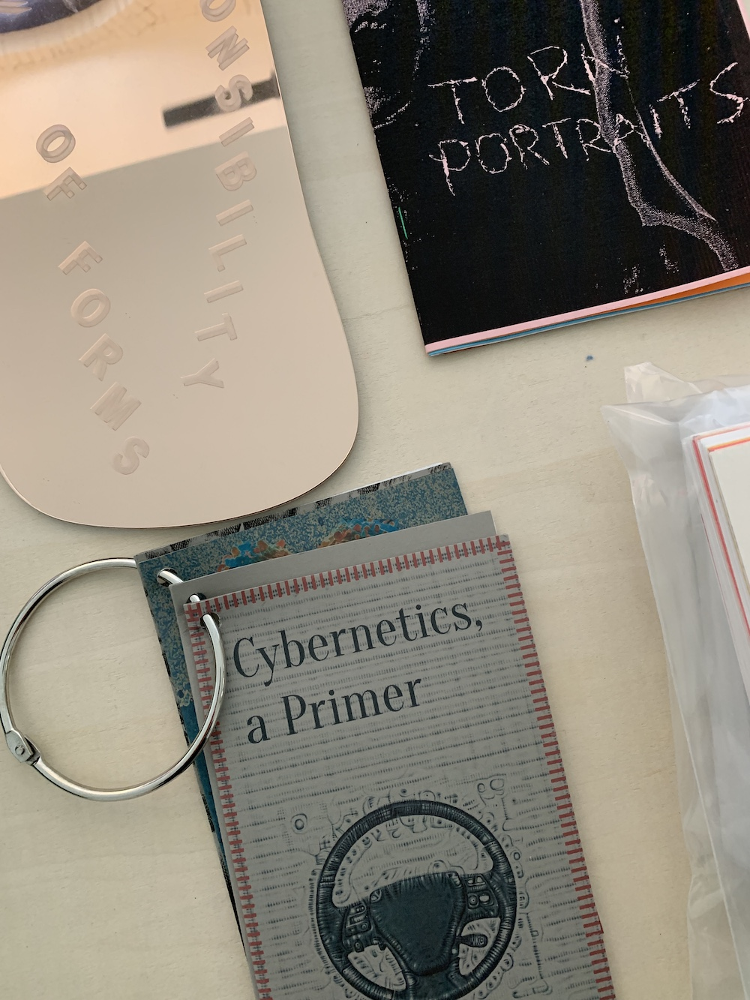
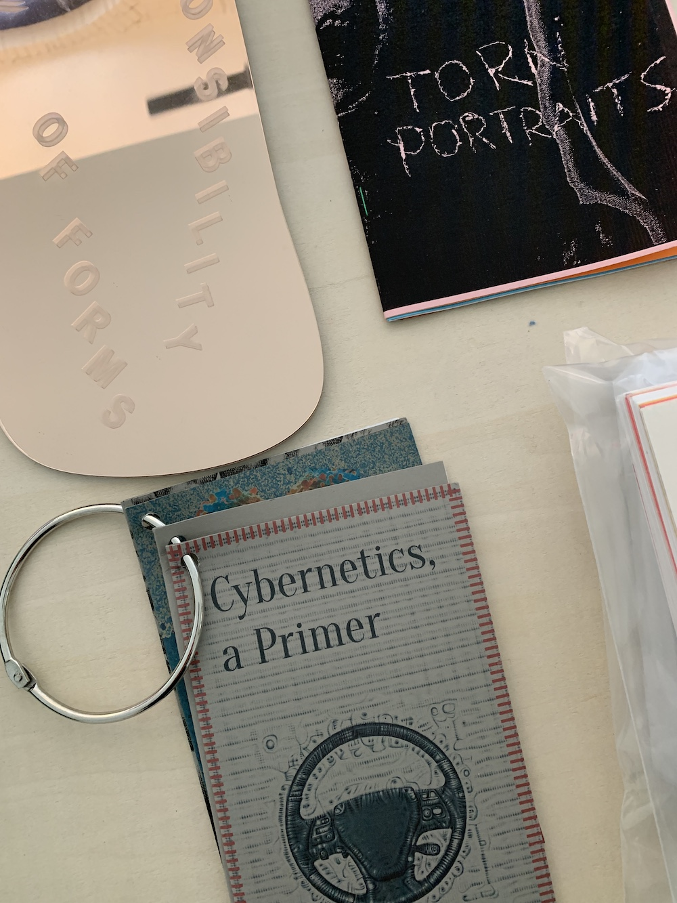
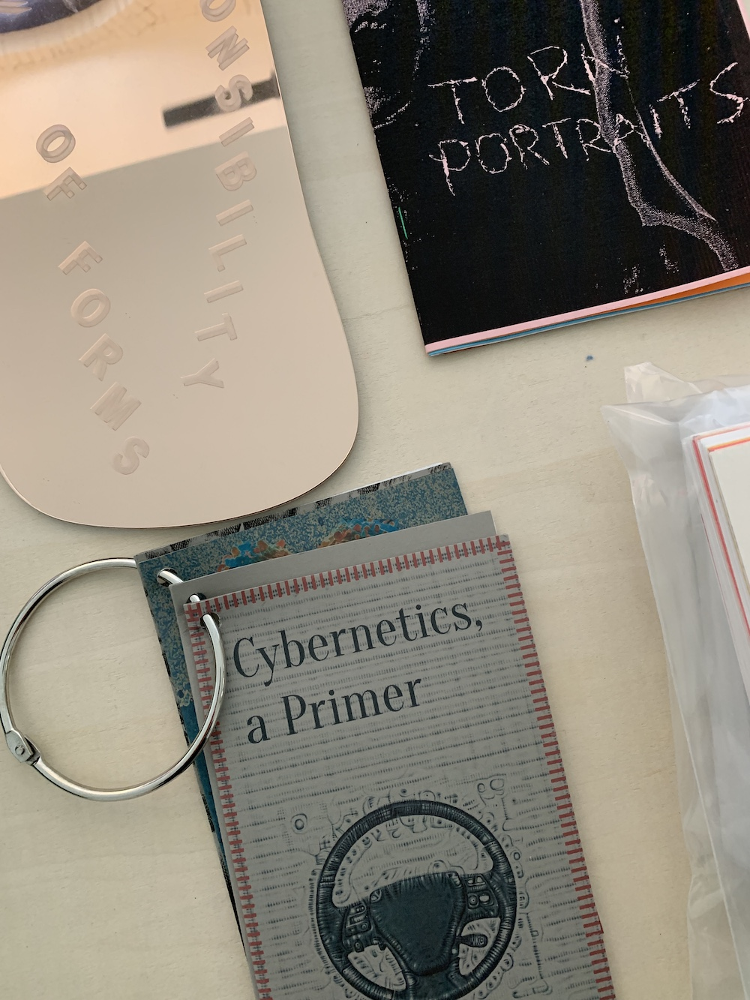

Queer.Archive.Work/library
Queer.Archive.Work’s reading room houses a non-circulating library of zines, books, and objects, open to all for research and inspiration. Contributions to the growing collection are welcomed, particularly works produced on-site using our risograph printer. Email Paul to visit.


 

Plans are underway to catalogue the collection. A few of the artists included in Queer.Archive.Work: Sal Randolph, Nicole Killian, Hannah Hiaasen, Nate Pyper, GenderFail, Demian DinéYazhi´, Amy Suo Wu, Walker Mettling, Olive B. Godlee, Hardworking Goodlooking, Arthur Katrina, American Artist, Noraa Kaplan, Lucas LaRochelle, Tony Cokes, Rin Kim, Nora Khan, and many others.
